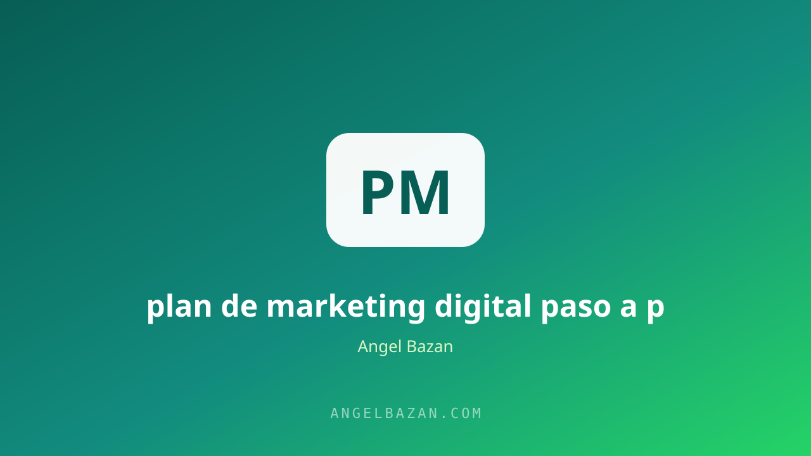

Plan de marketing digital paso a paso para tu negocio (2026)
El marketing sin plan es gastar sin dirección. Este es el método en 6 bloques para construir un plan claro: análisis, público, objetivos, canales, contenido y presupuesto.
En este artículo
El 90% de los negocios no tiene un plan de marketing: publican cuando se acuerdan, invierten cuando pueden y celebran métricas que no significan nada. El resultado es el mismo de siempre: dinero y tiempo perdidos en direcciones que no llevan a ninguna parte. Un plan no es un documento para archivar; es una brújula que te dice qué hacer esta semana, cuánto gastar y qué medir.
La buena noticia: un plan de marketing efectivo no requiere ser un especialista ni una agencia. Requiere orden. Este artículo te lleva por los seis bloques que yo uso con mis clientes, en el orden correcto, con ejemplos concretos para que termines con un plan ejecutable en las próximas 48 horas.

Los 6 bloques del plan
- Análisis de situación: dónde estás hoy, qué funciona y qué no.
- Público y mensaje: a quién le vendes y qué le dices.
- Objetivos y KPIs: metas medibles en números.
- Canales y contenido: dónde vas a estar y qué vas a publicar.
- Presupuesto y herramientas: cuánto inviertes y con qué.
- Ejecución y revisión: el calendario y la rutina de medición.
El orden importa: sin análisis no hay público correcto, sin público no hay mensaje, y sin mensaje el presupuesto se desperdicia. Saltarse bloques es la causa más común de planes que fracasan.
Bloque 1: análisis de situación
Empieza con tres preguntas: ¿qué vendo y a quién? ¿qué números tengo hoy (ventas, costos, margen)? ¿qué ha funcionado y qué ha fracasado en mis últimos 6 meses? Sé brutalmente honesto: el plan no puede basarse en lo que esperas, sino en lo que ya pasó. Incluye también un vistazo a tus competidores: qué prometen, cómo lo comunican y dónde están dejando huecos. Este análisis es la base de tu mecanismo único, el argumento que te hará diferente.
Un buen análisis no es un informe: es una conversación honesta contigo mismo. Pregúntate qué le compraría hoy tu cliente a tu mejor competidor si tuviera que elegir, y anota la respuesta tal cual es, sin maquillarla. Esa respuesta es tu punto de partida real. Si hoy no sabes responderla, el primer objetivo del plan no será vender más, sino descubrir tu ventaja con pruebas, no con opiniones.
Bloque 2: público y mensaje
Define a tu cliente como una persona con nombre, trabajo, dolores y deseos. Cuanto más específico, mejor: "Mariela, 35, dueña de una pastelería que quiere vender más por encargo" vale más que "mujeres emprendedoras". Con el perfil claro, escribe el mensaje central: el problema que resuelves, el resultado que entregas y por qué tú. Los pasos para construir ese público y llegar a él están en cómo encontrar clientes por internet.
Bloque 3: objetivos y KPIs
Los objetivos se escriben en números, no en intenciones. "Quiero más ventas" no sirve; "facturar S/ 25.000 este trimestre con un ROAS de 3" sí. Para cada objetivo, elige un KPI: leads, costo por lead, tasa de conversión, ticket promedio, ROAS. La jerarquía es sencilla: los KPIs de entrada (tráfico, leads) alimentan los KPIs de salida (ventas, ROAS). Si tu objetivo es de salida, vigila también los de entrada para saber dónde se rompe el embudo. La medición se detalla en cómo medir el éxito de tus campañas y la diferencia entre rentabilidad y gasto en ROAS vs ROI.
Bloque 4: canales y contenido
No estés en todos lados: domina dos o tres. En 2026, la combinación más rentable para la mayoría de los negocios es Meta Ads para atraer + WhatsApp para vender + contenido orgánico en TikTok e Instagram para alimentar la confianza. Cada canal tiene un rol claro y un CTA hacia el siguiente. El contenido se planifica por semana con la misma lógica de valor primero, venta después: el calendario listo en el calendario de contenidos y la mecánica de piezas que venden en cómo crear contenido que venda. El embudo que conecta todos los canales se diseña como se explica en cómo crear un embudo de ventas.
Bloque 5: presupuesto y herramientas
Divide tu inversión en dos bolsillos: lo que sostiene tu operación actual (anuncios de los productos que ya venden) y lo que prueba el futuro (testeo de nuevas ofertas, creatividades o audiencias). La regla práctica: 70-80% a lo que funciona, 20-30% a lo que podría funcionar. Calcula cuánto necesitas para testear sin arriesgar el flujo con la calculadora de presupuesto de testeo y estructura las campañas con el estructurador de campañas.
Bloque 6: ejecución y revisión
Un plan sin ejecución es una lista de deseos. Convierte cada acción en tareas concretas con fecha: "lunes: 2 reels + difusión a WhatsApp", "miércoles: revisar CPL de las campañas". Y reserva 30 minutos semanales para la revisión: compara lo real contra el plan, decide qué seguir, qué ajustar y qué matar. El plan es un organismo vivo: se corrige cada semana con los datos, no cada trimestre con las emociones. Los anuncios que alimentan la ejecución se optimizan como se explica en cómo vender más con Meta Ads.
Define también quién es dueño de cada tarea, aunque seas tú para todo: el propietario claro elimina el "creí que lo hacías tú" y convierte el plan en responsabilidad. Usa un calendario compartido o una simple hoja de seguimiento con tres columnas: tarea, fecha y estado. El 80% del éxito de un plan no está en su calidad teórica, sino en que se ejecute con foco durante 90 días seguidos.
Preguntas frecuentes
¿Cuánto tiempo se tarda en ver resultados? Los resultados del tráfico pagado aparecen en semanas; los del contenido orgánico, en 2-3 meses. Un plan realista mezcla ambos y define plazos distintos para cada uno.
¿Necesito una agencia para ejecutarlo? No para empezar: con el plan definido y las herramientas gratuitas puedes ejecutar tú mismo. La agencia se justifica cuando tu tiempo vale más que lo que te costaría delegar.
¿Qué hago si no cumplo una meta del plan? Diagnostica antes de cambiar el plan: ¿falló la meta, la ejecución o la estrategia? La mayoría de las veces es ejecución, y eso se corrige con foco, no reescribiendo todo.

Angel Bazán
Especialista en funnels, Meta Ads y WhatsApp + IA. Ayudo a negocios a vender más combinando tráfico pagado con conversaciones automatizadas.
Conoce más sobre mí →Aprende a crear y vender productos digitales con Meta Ads, WhatsApp e IA
Clases en vivo, estrategias y recursos para construir tu sistema desde cero. 🚀
Únete gratis al grupo